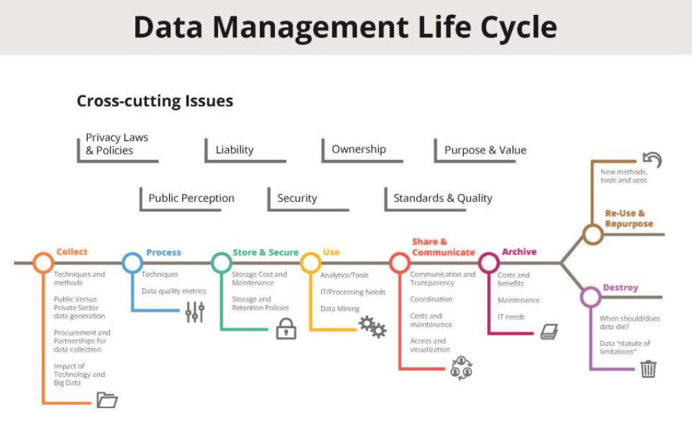

Criação de Playbooks
Como criar um Playbook para resposta a incidentes?
1. Defina metas e prioridades organizacionaisIdentifique os ativos, sistemas e processos críticos que necessitam de proteção. Considere o impacto de incidentes sobre essas áreas para priorizar as respostas adequadamente. Alinhe as metas e objetivos de segurança ao apetite de risco da organização e às exigências de conformidade regulatória.
Documente os objetivos claramente no manual, incluindo:
- Proteção da integridade e continuidade operacional.
- Mitigação de danos financeiros, reputacionais e legais.
- Cumprimento de normas e padrões de segurança.
2. Estabeleça funções e responsabilidades
Determine as responsabilidades específicas de cada membro da equipe de resposta a incidentes, além de outras partes envolvidas.
- Manipuladores de incidentes internos: profissionais técnicos que identificam, analisam e mitigam incidentes.
- Terceiros especializados: consultores externos ou prestadores de serviços que auxiliam na investigação e resposta.
- Equipes jurídicas e de comunicação: responsáveis pela gestão de impactos legais e pela comunicação com partes interessadas internas e externas.
- Tomadores de decisão: alta gestão ou C-suite para aprovar ações críticas e alocação de recursos.
3. Realize uma avaliação de risco
Conduza uma análise abrangente para identificar ameaças específicas e avaliar vulnerabilidades no ambiente organizacional.
- Analise a probabilidade de ocorrência e o impacto potencial de diferentes incidentes.
- Categorize os riscos de acordo com sua gravidade para priorizar a alocação de recursos.
- Considere ameaças internas (acessos indevidos) e externas (malware, ataques DDoS, violações de dados).
4. Desenvolva procedimentos detalhados
Crie processos bem definidos para cada fase de resposta a incidentes. O manual deve incluir:
- Detecção e análise: métodos para identificar e confirmar incidentes.
- Contenção: estratégias para limitar danos e preservar evidências.
- Erradicação: ações para eliminar a causa raiz do incidente.
- Recuperação: processos para restaurar sistemas afetados com segurança.
- Pós-incidente: análise de lições aprendidas e ajustes para prevenir futuros incidentes.
5. Planeje o envolvimento de terceiros e relatórios
Inclua diretrizes para o uso de suporte externo, como agências de aplicação da lei, consultorias ou serviços de resposta a incidentes.
- Defina critérios claros para acionar terceiros (ex.: incidentes de alta gravidade ou violações de dados regulamentadas).
- Crie um processo formal de relatório para partes internas, reguladores e indivíduos afetados, garantindo comunicação ágil e precisa.
6. Teste, treine e refine continuamente
Implemente exercícios de simulação para validar o manual e identificar lacunas. Esses testes ajudam a melhorar a preparação da equipe e a eficácia das respostas.
- Realize treinamentos regulares para garantir que todos compreendam suas funções e possam executá-las sob pressão.
- Ajuste o manual com base em lições aprendidas durante simulações e incidentes reais.
- Atualize periodicamente o conteúdo para refletir mudanças no cenário de ameaças e nos requisitos regulatórios.
Ciclo de Vida da Gestão de Dados
O ciclo de vida da gestão de dados é um processo abrangente que contempla todas as etapas pelas quais os dados atravessam, desde sua coleta inicial até sua destruição ou reutilização. Em cada uma dessas etapas, existem desafios críticos relacionados à cibersegurança, que demandam soluções específicas para garantir a proteção, a integridade e o valor estratégico dos dados. Além disso, questões transversais como segurança, conformidade legal, padrões de qualidade e percepção pública permeiam todas as fases do ciclo. Abaixo, exploramos cada etapa em profundidade, destacando os aspectos críticos no contexto da cibersegurança.
1. Coletar
Nesta fase inicial, os dados são adquiridos por meio de técnicas e métodos que podem variar dependendo do setor ou da aplicação. No âmbito da cibersegurança, isso inclui a coleta de logs de sistemas, dados de redes, eventos de segurança e informações provenientes de sensores ou dispositivos IoT.
Os profissionais de cibersegurança precisam garantir que os dados sejam coletados de maneira segura e confiável, prevenindo interferências externas. A proteção dos canais de transmissão é crítica, utilizando protocolos como TLS para impedir ataques de interceptação. Além disso, políticas claras sobre quais dados são coletados e por que são essenciais para reduzir riscos desnecessários.
2. Processar
O processamento é a etapa onde os dados coletados são organizados, limpos e analisados. No contexto de cibersegurança, essa fase é fundamental para identificar padrões de comportamento, detectar anomalias e produzir insights acionáveis.
A integridade das operações realizadas durante o processamento deve ser assegurada por meio de controles robustos, como ambientes isolados e técnicas de monitoramento contínuo. Isso evita a inserção de dados maliciosos ou a manipulação de informações críticas. Profissionais devem também usar algoritmos que garantam rastreabilidade e integridade ao longo do processo.
3. Armazenar e Proteger
Depois de processados, os dados são armazenados para uso futuro, seja em bancos de dados locais, na nuvem ou em sistemas distribuídos. Esta etapa exige um enfoque rigoroso em segurança, já que dados armazenados são frequentemente alvos de ataques cibernéticos.
Criptografia de dados em repouso, políticas de retenção e backups regulares são práticas essenciais. Além disso, autenticação multifator e segmentação de acesso devem ser aplicadas para limitar quem pode acessar os sistemas de armazenamento. Profissionais também devem implementar auditorias regulares para identificar e corrigir vulnerabilidades rapidamente.
4. Usar
A fase de utilização dos dados é onde eles geram valor, seja por meio de análises ou para guiar decisões. Em cibersegurança, isso inclui atividades como monitoramento de ameaças e resposta a incidentes.
Garantir o uso apropriado dos dados exige a aplicação de controles rigorosos, como logs de auditoria detalhados e segregação de funções. Além disso, ferramentas de mascaramento de dados podem ser implementadas para proteger informações sensíveis durante o uso, reduzindo o risco de exposição indevida.
5. Compartilhar e Comunicar
Compartilhar dados é essencial para promover a colaboração, como na troca de informações sobre ameaças (Threat Intelligence) entre equipes de cibersegurança ou organizações.
Para profissionais da área, proteger dados durante o compartilhamento requer o uso de criptografia ponta a ponta e a definição de acordos claros sobre como as informações podem ser usadas. Auditorias regulares e ferramentas de monitoramento ajudam a garantir que os dados sejam utilizados apenas conforme permitido.
6. Arquivar
Nesta etapa, dados que não são mais necessários para uso ativo, mas que possuem valor estratégico ou legal, são arquivados. Isso é comum em casos onde é necessário manter registros para auditorias ou para atender a requisitos regulatórios.
A proteção de dados arquivados é tão crítica quanto a de dados ativos. Técnicas como criptografia de longo prazo e controles de acesso baseados em níveis hierárquicos garantem que apenas indivíduos autorizados possam acessar essas informações. A redundância em sistemas de arquivamento também é essencial para prevenir perdas.
7. Reutilizar e Reaproveitar ou Destruir
Os dados podem ser reaproveitados para novos propósitos, como análises adicionais, ou destruídos de forma segura ao atingirem o fim de sua utilidade.
A reutilização de dados exige conformidade com regulamentos de privacidade, assegurando que os novos usos sejam compatíveis com os propósitos originais da coleta. Para destruição, profissionais de cibersegurança devem empregar métodos certificados, como desmagnetização ou sobrescrita, para garantir que os dados sejam eliminados de maneira irrecuperável.

Questões Transversais no Ciclo de Vida dos Dados
As questões transversais são aspectos fundamentais que permeiam todas as etapas do ciclo de vida da gestão de dados. No contexto da cibersegurança, essas questões são amplamente interconectadas e podem determinar o sucesso ou fracasso das práticas de segurança de dados. A seguir, exploramos essas questões de maneira aprofundada:
- Leis e Políticas de Privacidade: Regulamentações como a LGPD, o GDPR e outras legislações globais são fundamentais para estabelecer limites sobre como os dados podem ser coletados, processados, armazenados e compartilhados. Organizações precisam integrar essas regulamentações em suas operações para evitar sanções legais e proteger os direitos dos indivíduos. Por exemplo, profissionais devem implementar políticas claras de consentimento, garantindo que o uso dos dados seja restrito aos fins declarados e legais.
- Segurança: Envolve o uso de tecnologias, processos e práticas que protejam os dados contra acessos não autorizados, ataques cibernéticos e outros riscos. Estratégias como criptografia, autenticação multifator e arquitetura de Zero Trust são pilares fundamentais. A aplicação contínua dessas práticas assegura que os dados estejam protegidos independentemente do ambiente onde se encontram.
- Propriedade: É crucial definir claramente quem detém os direitos sobre os dados e suas responsabilidades. Isso garante a atribuição adequada de responsabilidades em caso de violações ou incidentes. Um exemplo seria estabelecer contratos claros em parcerias de outsourcing, delimitando as obrigações de cada parte no gerenciamento e proteção dos dados.
- Propósito e Valor: Avaliar continuamente o propósito dos dados e seu valor para a organização é essencial. Isso inclui determinar quais dados devem ser mantidos e quais podem ser descartados para reduzir riscos e custos. Revisões regulares de inventários de dados ajudam a identificar informações obsoletas ou redundantes, permitindo decisões estratégicas.
- Responsabilidade Legal: Inclui conformidade com regulamentações e normativas aplicáveis, garantindo que as práticas de gestão de dados estejam alinhadas às obrigações legais. Isso abrange desde a coleta até a destruição, incluindo notificações obrigatórias em casos de vazamentos. Por exemplo, profissionais devem criar planos detalhados de resposta a incidentes que atendam a requisitos legais específicos.
- Padrões e Qualidade: Estabelecer padrões claros para a qualidade e integridade dos dados é fundamental para evitar erros que possam comprometer decisões baseadas em dados. Ferramentas automatizadas de validação e consistência são recomendadas para assegurar que os dados sejam precisos e confiáveis em todas as etapas do ciclo.
- Percepção Pública: A confiança do público é um ativo crítico em um ambiente onde violações de dados são cada vez mais comuns. Manter práticas transparentes e éticas de gestão de dados fortalece a reputação organizacional. Isso pode incluir a publicação de relatórios anuais destacando esforços de proteção e melhorias na segurança de dados.
Classificação de Dados
A classificação de dados é uma das etapas mais críticas no gerenciamento da segurança da informação. Ela não se resume apenas a etiquetar dados como "confidenciais" ou "públicos", mas sim a estabelecer um processo estruturado para proteger os dados com base em sua sensibilidade e importância. Quando implementada corretamente, a classificação de dados ajuda as organizações a minimizar riscos, atender a regulamentações e garantir a proteção de informações críticas.
Definindo a Finalidade da Classificação de Dados
Antes de iniciar o processo de classificação, é essencial compreender as finalidades que esse processo deve atender. A classificação de dados não é uma tarefa aleatória; ela é guiada por objetivos específicos que envolvem tanto aspectos de segurança quanto conformidade regulatória.
Uma das principais finalidades é garantir que a organização esteja em conformidade com regulamentações de privacidade, como o GDPR, a LGPD ou a HIPAA, que exigem o tratamento específico de informações sensíveis. Outro objetivo importante é a proteção de dados confidenciais contra acessos não autorizados, prevenindo vazamentos que possam resultar em danos financeiros, legais ou reputacionais.
Além disso, a classificação ajuda na gestão de riscos, permitindo que a organização aloque recursos e controles de forma mais eficaz, além de fornecer diretrizes claras sobre como manusear dados em diferentes contextos, de acordo com sua sensibilidade.
Estabelecendo o Âmbito do Ambiente de Dados
Uma vez definidos os objetivos da classificação, o próximo passo é determinar o escopo dos dados a serem classificados. O escopo envolve a identificação de todos os pontos onde os dados estão armazenados, processados ou transmitidos dentro da organização.
Isso pode incluir dados armazenados em servidores locais, dispositivos móveis, bancos de dados na nuvem, e até mesmo dados em trânsito por meio de redes corporativas ou serviços externos. Além disso, a classificação deve considerar tanto dados estruturados, como tabelas de banco de dados, quanto dados não estruturados, como documentos de texto, e-mails ou arquivos multimídia.
A definição do escopo permite uma visão holística do ciclo de vida dos dados, abrangendo todas as fontes e destinos de informações dentro da organização.
Descobrindo Todos os Dados no Escopo
Para classificar efetivamente os dados, é necessário primeiro identificá-los. Ferramentas de descoberta de dados (data discovery) são fundamentais nesse processo, pois permitem que as organizações mapeiem e identifiquem dados sensíveis em seus sistemas, muitas vezes de forma automatizada.
As ferramentas de descoberta são capazes de detectar dados que possam estar dispersos em locais inesperados, como backups antigos ou dispositivos de armazenamento não monitorados. Além disso, auditorias contínuas dos sistemas existentes são essenciais para garantir que todos os dados relevantes sejam incluídos no escopo da classificação.
É importante envolver todas as partes interessadas, incluindo equipes de TI, de segurança da informação e de conformidade, para garantir que o ciclo de vida dos dados seja documentado corretamente e que a classificação seja feita de maneira abrangente.
Definindo Níveis de Sensibilidade e Classificando os Dados
Após a identificação dos dados, o próximo passo é classificá-los com base em sua sensibilidade. Os dados podem ser classificados em diferentes níveis, dependendo do impacto que sua divulgação não autorizada pode causar.
Modelos do DoD (Department of Defense)
| Categoria | Cor | Definição | Exemplos de Dados |
|---|---|---|---|
| Não Classificado | Dados aprovados para divulgação pública. | Comunicados de imprensa, material de marketing. | |
| Inform. Controlada | Dados não classificados, mas que requerem proteção de divulgação. | Guias internos, manuais de usuários. | |
| Confidencial | Dados cuja exposição pode causar danos à segurança. | Informações de autenticidade, documentos sensíveis internos. | |
| Secreto | Dados cuja exposição pode causar danos graves à segurança. | Planos militares, sistemas de armas. | |
| Ultrasecreto | Dados cuja exposição pode causar danos excepcionais à segurança. | Atividades de inteligência, criptografia, informações sobre armas de destruição em massa. |
| Categoria | Cor | Definição | Exemplos de Dados |
|---|---|---|---|
| Público | Dados aprovados para divulgação pública. | Comunicados de imprensa, materiais publicitários. | |
| Apenas Interno | Dados empresariais não sensíveis usados internamente. | Guias internos, políticas empresariais. | |
| Confidencial | Dados sensíveis restritos a determinados funcionários ou equipes. | Dados bancários, informações biométricas, segredos comerciais. | |
| Restrito | Dados altamente sensíveis com impacto severo em caso de vazamento. | Dados financeiros confidenciais, informações pessoais sensíveis, registros médicos. |
Informações Sensíveis para cada situação
Informações sobre segurança de instalações essenciais, vulnerabilidades em sistemas de energia e segurança física de infraestruturas críticas.
Dados sobre segurança de defesa, informações de propulsão nuclear e inteligência de defesa nacional.
Regulamentações sobre exportação de tecnologia sensível e pesquisa controlada internacionalmente.
Dados financeiros críticos, incluindo segurança de transações e informações de supervisão financeira.
Informações sobre inteligência operacional, segurança de dados internos e registros financeiros de inteligência.
Dados sobre investigações, segurança de comunicações e informações de vigilância e aplicação da lei.
Informações sobre procedimentos legais, proteção de testemunhas e privacidade em processos judiciais.
Proteção de recursos arqueológicos, propriedades históricas e gerenciamento de parques nacionais.
Segurança de materiais nucleares, informações sobre salvaguardas e segurança operacional nuclear.
Proteção de dados pessoais, informações de saúde e registros de privacidade sensíveis.
Segurança em aquisições, informações proprietárias e proteção de contratos sensíveis.
Segurança de dados estatísticos, incluindo censos e pesquisas econômicas.
Proteção de informações fiscais e segurança de dados tributários confidenciais.
Segurança em registros de transporte e proteção de informações de segurança ferroviária.